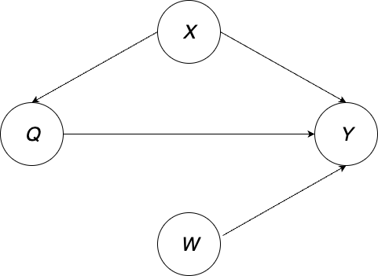
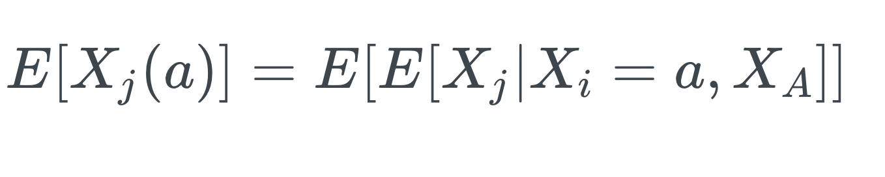
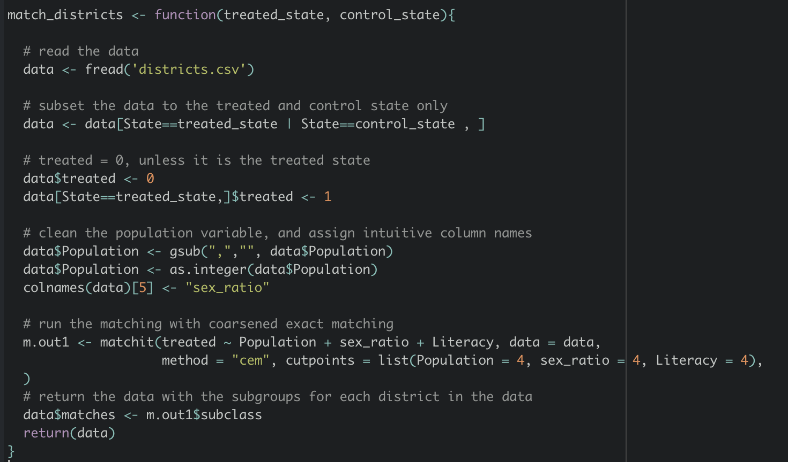
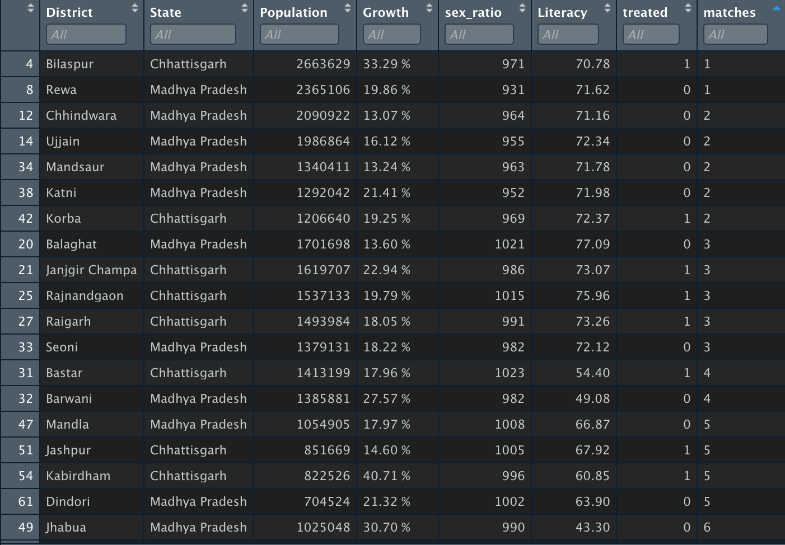
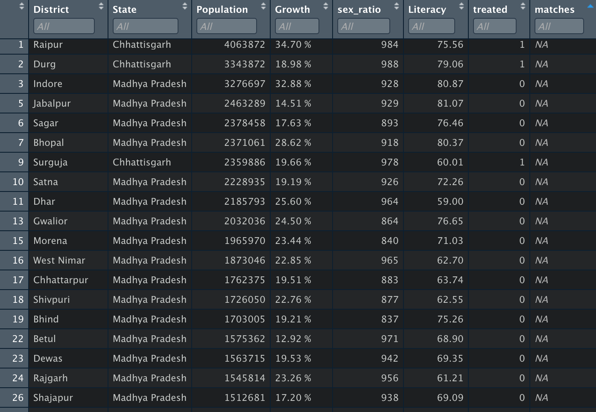
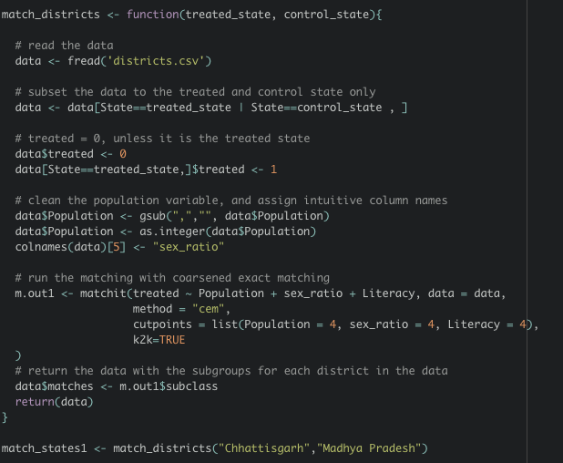
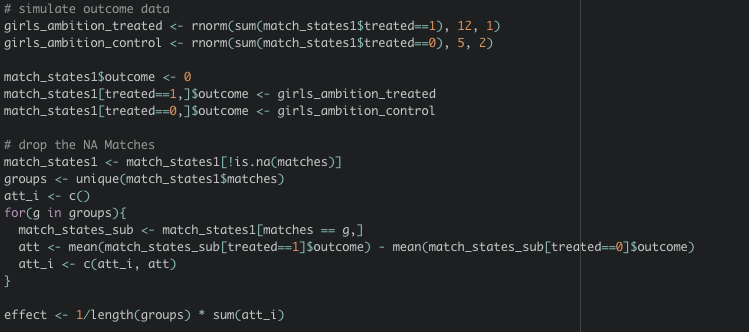
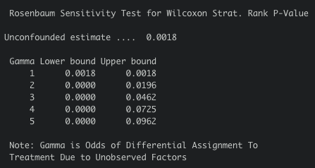

Saloni Bhogale

Ph.D. Student
Department of Political Science
University of Wisconsin-Madison
bhogale@wisc.edu
Welcome! My name is Saloni Bhogale, and I am pursuing an M.S. in Statistics (Applied Statistics) and a PhD in Political Science at the University of Wisconsin-Madison.
My work is focused on the political economy of development and political institutions. I am working on projects that examine the effects of term lengths on legislator performance, the effects of judicial (in)efficiency on economic development and the impact of affirmative action. Methodologically, I am interested in learning more about how social scientists use and apply machine learning - particularly, I am working on a project that evaluates the effectiveness and validity of using word embeddings to measure group-level biases in textual data. I also co-coordinate the Comparative Politics Colloquium — a workshop which meets weekly and invites speakers, faculty members, and graduate students to present their work and receive feedback.
I am interested in causal inference because the method can be used to understand whether variation in efficiency of courts can have an impact on economic development. While it may not be possible to experimentally manipulate 'court quality' by randomly assigning 'better' courts to some areas, I am hoping that the tools from causal inference can be leveraged to credibly establish the broader economic effects of weak institutions, particularly judicial ineffiency.
Definition
The Question
The quality of a country's judiciary has far-reaching consequences, as it plays a key role as the arbitrator of justice and is the institution that protects the rights of citizens. However, there remains large variation in the ability of courts to perform this mandate, especially in developing countries.
Of particular importance is institutional diversity, which can affect the fairness, access and legitimacy of an institution.
This motivates the question: What are the effects of affirmative action on judicial efficiency, and diversity within the judiciary?
Background
Gender inequality in developing countries remains an important issue. The societal balance is tilted in favor of the male population - in the labor market, health, education and personal autonomy.
Further, gender-based preferences thus result in enrollment gaps, wage gaps and other forms of discrimination. Discriminatory gender norms are persistent and get carried over to public and political institutions, and thus policies are instituted to address this societal issue.
However, there remains little systematic analysis of affirmative action policies in the judiciary, and I hope to address this research gap through my work.
Random variables
Below, I describe the random variables that I will use to model the problem:
- Treatment: Quotas, an indicator variable that takes the value 1 if a court is located in an area with affirmative action for women, and 0 otherwise.
- Outcome 1: Representation, measured by the number of female judges practicing in the court
- Outcome 2: Judicial efficiency, measured by the average time taken to resolve a case in a given District Court
- Outcome 3: Pipeline effects, measured by the number of women attempting judicial service examninations.
- Control 1: Time, a dummy to indicate whether the observation is before or after the quota policy is in place
- Control 2: Court workload
- Other controls: controlling for court and area characteristics
The Causal Effect
Through this project, I plan to recover the average treatment effect
Mathematically, we can write:
E[Y(a) - Y(a')] which is also known as the average causal effect
Here, Y can be one of outcomes 1 to 3, and a indicates if the court is in an area with affirmative action, and a' indicates a court which is in an area without affirmative action.
Working Hypothesis
Hypothesis 1: Quotas lead to an increase in the number of female judges practicing in District Courts
Hypothesis 2: Quotas lead to no change in judicial efficiency
Hypothesis 3: Quotas lead to an increase in the number of women attempting the state judicial services examinations.
Identification
In the following section, I describe the identification strategy for Hypothesis 3 only for simplicity. I want to test if quotas lead to an increase in the number of women attempting the state judicial services examinations.
Assumptions
- Treatment Irrelevance (from SUTVA): treatment interventions result in the same potential outcome, so this is not a concern
- Consistency (from SUTVA): Same version of treatment (Quota) as the policy is uniformly applied across districts
- No Interference (from SUTVA): this might not hold since changes due to quotas across districts might interfere, especially for proximate districts and along borders. For example, a court close to a border may be close to villages and settlements in treated and control districts, and depending on proximity and transportation availability, female judges could serve as mentors for women across both treated and untreated areas.
- Exchangeability: the outcomes are independent of the assignment
Steps for Identification & Justification
Here, Q signifies the treatment (Quotas), X are a set of variables that can affect both the institution of quotas and the outcomes Y (increase in females attempting judicial service examinations), and W are variables that affect Y, for instance, some regions may have incentives given to women to take up law as a career, or to attempt these exams.
I use backdoor adjustment to determine the nodes that satisfy the backdoor criteria so that conditioning on them I can identify causal effects.
Here, X is the node that satisfies the backdoor criteria, thus X d-separates Q and Y and further invoke consistency and causal irrelevance as shown above. Finally, the law of iterated expectation helps us get at the final line in the above derivation.
Accordingly, I use the law of iterated expectation, and consistency helps me arrive at this. As described above, we have consistency since the same version of treatment (Quota) as the policy is uniformly applied across districts with and without quotas.
Interpretation and Conclusion
In order to identify the effects, I would need to collect data on several control variables. For instance, time is a control that affects both the treatment and the outcome, and will help me employ a difference-in-difference strategy, to compare the changes over time in districts with and without quotas.
Further, I will use court-level fixed effects to control for court characteristics.
In order to make this analysis credible, I am leveraging a natural experiment wherein geographically large states in India split into two states, wherein one part ended up having quotas introduced while the other did not. This ensures that there are reasonably similar starting characteristics (similar geography, institutions, language etc.).
However, the new states might be different in other respects that may be important to take into account for this particular research question (for instance, women’s literacy, male-female ratio in population, attitudes towards women etc.). In order to make a “neat” causal argument, I plan to buttress this analysis by using propensity score matching to match districts with similar characteristics, wherein one had a quota and the other did not, and then estimate causal effects for “similar” units only.
Estimation / Implementation
Algorithm: Coarsened Exact Matching
In this project, I plan to employ a research design that allows me to select and compare courts by accounting for confounders through a ‘natural experiment’.
I study the effect of quotas by using data from three large Indian states from which new states were carved out in late 2000. The three new states (created out of territories that belonged to the older states) went on to put quotas in place for women in the lower judiciary. The older territories can thus serve as a counterfactual, which allows us to observe what may have happened if quotas were not instituted, given that the regions were originally under the same political and judicial systems.
Comparing the data for the old and new states, I found that the new states were geographically smaller in size and have a better sex-ratio as well as literacy rates (both overall, and for females). While these states might be geographically and culturally similar, the reasons for the splits and other differences listed above may point to unmeasured confounders.
I allay these concerns by employing a matching approach, wherein I use 'coarsened exact matching' to determine 'similar' districts. I match districts across the old and new states which have similar (1) sex-ratio (2) female literacy and (3) overall literacy.
Steps for Estimation
In order to perform 'coarsened exact matching' I coarsen each of the variables into 4 'bins' as described in the algorithm. Since I am using the 'cem' method in the 'MatchIt' package in R, this number describes the number of cutpoints separating bins.
Further, any 'bins' or groups that do not include the treated and controlled units are discarded.
I use the following code to determine the matched groups of districts:
Data
In order to test the hypothesis, I plan to use a dataset on case records from the Indian District e-Courts project that covers cases in India's lower judiciary. The e-Courts project aimed at the complete digitization of case records in all district courts, and makes its repository available to be queried using case numbers and other details. I plan to scrape this data for both case-level and judge-level information for all cases filed in Indian District courts between 2000 and 2018. Next, I will use two open-source tools for determining the gender of judges, lawyers and litigants - the first employs a bidirectional Long Short-Term Memory (LSTM) model on a dataset of labeled names to assign gender attributes to the actors, and the second is a Python package that helps infer socio-demographic characteristics from Indian Names.
I will organize the data into a court-day dataset, computing the relevant dependent variables for the analysis as the number of female judges, number of female advocates, cases filed by female petitioners and number of female aspirants to the lower judiciary.
Performance of Algorithm
I ran 'MatchIt' in R to match districts in coarsened units. These were n-to-k coarsened exact matchings, where for n treated district, k control matches could be made. There were also some which were not assigned any groups, for whom the 'matches' column was shown to be NA.
I display a screenshot of the matched data below:
Further, there was some data for which no matches were performed, as seen below:
In total, we can see that 7 groups were formed, with varying number of treated and control units.
Finally, it is important to note that we are not estimating the ATT here - since there are districts in certain groups that have been dropped since no matches could be made. Thus, what we are doing is estimating the ATT, conditional on being matched.
Homework 5
Assumptions Made
Throughout this research, I have assumed that there is no unmeasured confounding - that there is no other variables that would condition the effect of quotas on females attempting judicial services examination
However, there may be a potential of unmeasured confounding, so I construct the Rosenbaum Bounds that lend themselves to a sensitivity test (Rosenbaum, 2002)
Investigating Sensitivity
The motivating idea of this work is to estimate 'Gamma' - that is, how big does 'Gamma' need to be such that the relationship between the treatment and outcome is preserved.
Interpreting Gamma: This number provides a sense of the different "odds" - that is, if Gamma is 1, it emulates a perfect randomized experiment. If Gamma is 2, then the matched districts differ in their assignments to treatment or control by a factor of 2 due to hidden bias.
If a particular Gamma is shown to be within statistically insignificant bounds, then the hidden bias of size Gamma cannot explain away the difference between the outcomes in the treated and control districts.
How big does Gamma for an unmeasured confounder need to be to explain away the association between the treatment and my outcome? The Rosenbaum Bounds provide a lower and an upper bound on the significance of the Gamma values that can help me understand this. Sensitivity analysis basically asks how conclusions about associations can be changed due to hidden biases of various magnitudes (Rosenbaum, 2002)
In order to conduct sensitivity tests by creating bounds on the data, I use the 'rbounds' package in R to conduct Rosenbaum Bounds Sensitivity Tests.
Here, I use the 'mcontrol' function that gives the sensitivity analysis for the significance levels from Wilcoxon's signed rank test, that is, the range of possible significance levels for various values of Gamma
One limitation is that the package only suports matched data with 2 or 3 controls units matched to each treated unit. However, this does not work well with my previous set up, which sometimes had over 7 observations assigned to one group
I thus re-set the coarsened exact matching procedure such that there is a 1:1 matching. To do this, I set k2k=TRUE in the MatchIt function
Next, I simulate outcome data for the experiment that measures girl's ambition and compute the average treatment effect for the matched pairs
This gives an effect of 6, that is, districts that have gender quotas for judges increase girl's ambitions to pursue law as a career by 6 units
Finally, I conduct the sensitivity analysis using the 1:1 matched pairs using coarsened exact matching. We want to test here how big the unobserved confounder needs to be oto explain away the significance of the result.
To do this, I run the following command:

And get the results as follows:
The table shows that to explain away the observed association between gender quotas for judges and girl's ambition, a hidden bias (or an unobserved covariate) would need to increase the odds of exposure to the quota by more than a factor of Gamma = 3, assuming that the statistically significant result is obtained at p=0.05
In order to conduct and interpret these results, I followed the procedure provided in Rosenbaum, Paul R. (2002) Observational Studies. Springer-Verlag.
Violation of assumption: Constructing E-Values
In order to test for the sensitivity of my conclusion to the stated assumptions (that there is no unmeasured confounding), I now assume that there may be unmeasured confounding. It would be helpful under this assumption to understand how big would the unmeasured confounder need to be to explain away the relationship between the treatment and outcome
Here, I compute Ding's and VanderWeele's bounds to understand how much bias can be tolerated in our outcomes. One key question is how to choose values for RR_uy and RR_au.
I get around this is by computing e-values (see more on e-values on VanderWeele's lecture here) - how much the unmeasured confounder must bias treatment assignments or the outcome to explain away the observed association between the treatment and outcome.
First, I compute the observed relative risk (RR_obs) = mean(treated outcomes) / mean (control outcomes) = 2.28
Further, I compute the 'evalue' in R, and find that I get E = 4, showing that, to explain away an observed relative risk of 2.28, the unmeasured confounder must increase the likelihood of an outcome by a factor of 4 or the treatment assignment must increase the likelihood of a level of the unmeasured confounder by a factor of 4.
My conclusion is that any other weaker confounding could not explain away the relationship.
Assumptions that cannot be investigated
One untestable assumption in this analysis is that since I am using matching followed by a difference-in-difference design, there is a possibility of common shocks - this is an untestable assumption that involves exogenous factors that are likely unknown to the researcher. For more on this, see this link.
One such district-level shock could be the changes in attitudes towards the judiciary in a particular district due to exposure to particular policy changes that are unknown to the researcher. In turn, this would affect ambition for candidates attempting the exams.
Conclusion
In summary, I was able to develop a research design that could causally identify whether affirmative action for women in the judiciary motivates younger women to take up law as a career.
This used the method of Coarsened Exact Matching, but it would be helpful to evaluate other matching methods and compare their performance. There is an option in the MatchIt package to do that called 'assessing-balance'.
Given the simulated outcomes, the main finding was that affirmative action for women led to an increase in younger women taking up law as a career. Further, the sensitivity analysis was able to establish how big 'Gamma' would need to be to explain away the association between the treatment and outcome, and I found that there is little risk of unmeasured confounding given my design and outcomes.
One limitation of the analysis has been getting the actual data on outcomes, which I will be collecting over the next few months. Another limitation has been looking at other (district-level) confounders - initiatives taken at the local level that might confound the results. I will look at news articles to rule these out entirely.
While my work only looks at the effects of affirmative action on the pipeline of people taking up law as a career, future work can look at other outcomes that affirmative action may have - including the effects on court productivity and sentencing outcomes for cases.
Finally, this work contributes to the literature by looking at a unique 'natural experiment' wherein states split, and different policies were instituted by using matching methods. This setting may be helpful for others who are looking at policy changes in different domains (for eg, health, education, nutrition etc.). A similar research design can be used to answer different questions within the domain of political economy.